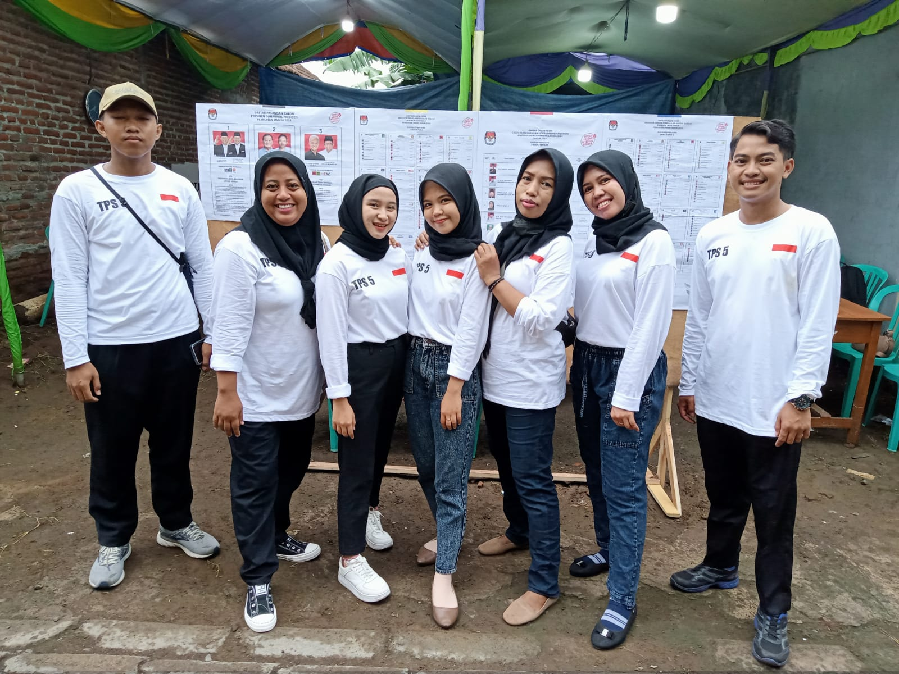
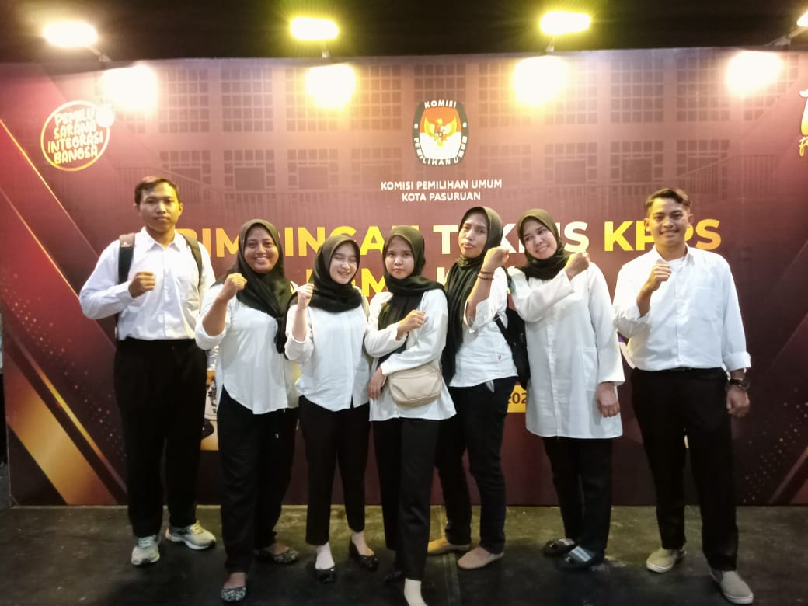
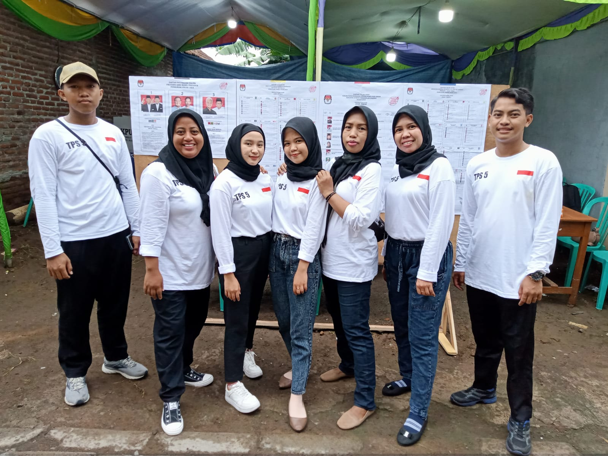
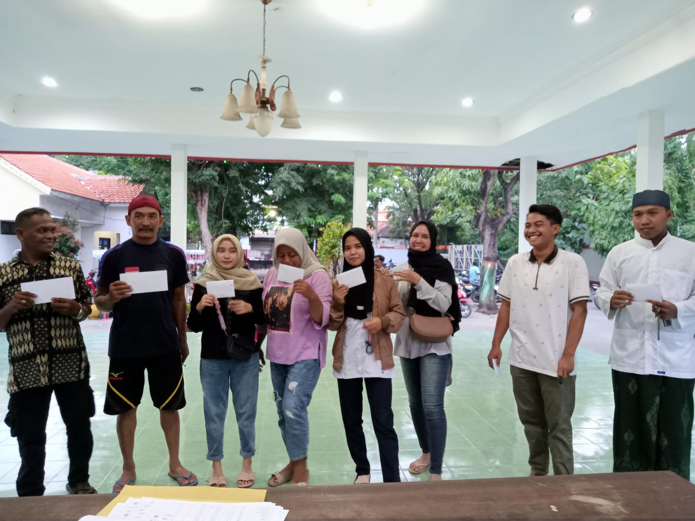
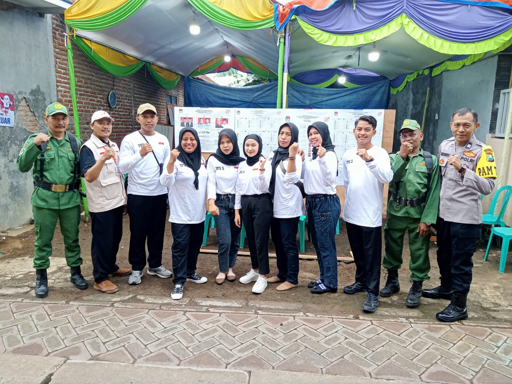

Visi & Misi
Visi
"Menjadi mitra terpercaya dalam pelaksanaan pemilihan umum, mewujudkan proses demokratis yang transparan dan partisipatif."
Misi
1. Profesional dan Terlatih: Menyediakan pelayanan profesional dengan anggota KPPS yang terlatih.
2. Transparan dan Terbuka: Memastikan transparansi dan keterbukaan dalam seluruh proses pemungutan suara.
3. Partisipasi Masyarakat: Mendorong partisipasi aktif masyarakat dalam pemilihan umum.
4. Keamanan dan Kesehatan: Menjamin keamanan dan kesehatan pemilih serta anggota KPPS.
5. Inovasi Teknologi: Mengadopsi teknologi untuk efisiensi dan keakuratan proses pemungutan suara.
6.Kemitraan yang Kuat: Membangun kemitraan yang kuat dengan pihak terkait dan komunitas.
Gallery

FOTO 1

FOTO 2

FOTO 3

FOTO 4
